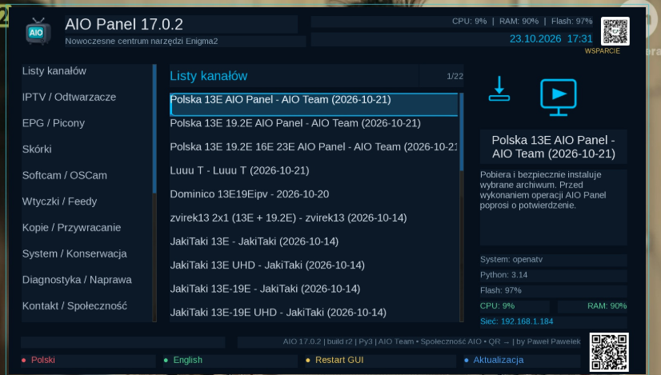

E2iPlayer
Naprawiono problemy instalacji E2iPlayer na części systemów Enigma2.
AIO TEAM • ENIGMA2 • AKTUALIZACJA 23.10.2026
AIO Panel 17.0.2: poprawiona instalacja E2iPlayer w wybranych systemach, zgodność z Pythonem 3.14, stabilniejsza walidacja pakietów oraz nowa autorska wtyczka OpenCamView 2.0.1 w sekcji Wtyczki Online. Zachowano funkcje 17.0.1.
 17.0.2 • 23.10.2026
17.0.2 • 23.10.2026
Najważniejsza zmiana 17.0.2
Nowa wersja poprawia instalację E2iPlayer na niektórych obrazach Enigma2, rozszerza zgodność z Pythonem 3.14 i upraszcza obsługę problemów instalacyjnych.
W sekcji Wtyczki Online znajdziesz teraz OpenCamView 2.0.1 — monitoring kamer IP (RTSP / ONVIF) dla Enigma2 z Pythonem 3.
23 października 2026 — instalatory, Python 3.14, E2iPlayer i OpenCamView.

Co nowego?
Naprawiono problemy instalacji E2iPlayer na części systemów Enigma2.
Poprawiono zgodność z Pythonem 3.14 i innymi środowiskami Pythona.
Nowa autorska wtyczka w Wtyczkach Online. Kamery IP, RTSP/ONVIF, narzędzia monitoringu; Python 3.
Poprawki błędów przy brakujących modułach, stabilniejsza instalacja i konfiguracja pakietów.
Zweryfikowane paczki instalacyjne z dostępną sumą SHA-256.
Zachowano listy kanałów, picony, skórki, aktualizator i narzędzia z wersji 17.0.1.
Changelog
Wydanie z 23 października 2026.
Aktualizacja: niebieski przycisk na pilocie w AIO Panel. Po aktualizacji w razie potrzeby wykonaj restart GUI Enigma2.
Wydanie
b7b46d35c7acadccdacf8061984c0d6886dc6145d4c6ac15b85824ec21a10b1b
Instalacja
Po instalacji lub aktualizacji wykonaj Restart GUI.
wget -q -O - "https://raw.githubusercontent.com/OliOli2013/PanelAIO-Plugin/main/installer.sh?$(date +%s)" | /bin/shopkg install --force-reinstall /tmp/enigma2-plugin-extensions-panelaio_17.0.2_all.ipkdpkg -i /tmp/enigma2-plugin-extensions-panelaio_17.0.2_all.debPlik DEB przeznaczony dla obrazów Enigma2 obsługujących dpkg. Po instalacji wykonaj Restart GUI.
Powiązane
Jeżeli tuner ma własną listę kanałów, nietypową konfigurację softcam lub dodatkowe skrypty, wykonaj kopię konfiguracji przed instalacją. AIO Panel zawiera mechanizmy ochronne, ale kopia użytkownika nadal jest najlepszym zabezpieczeniem.